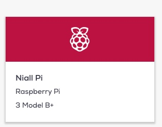
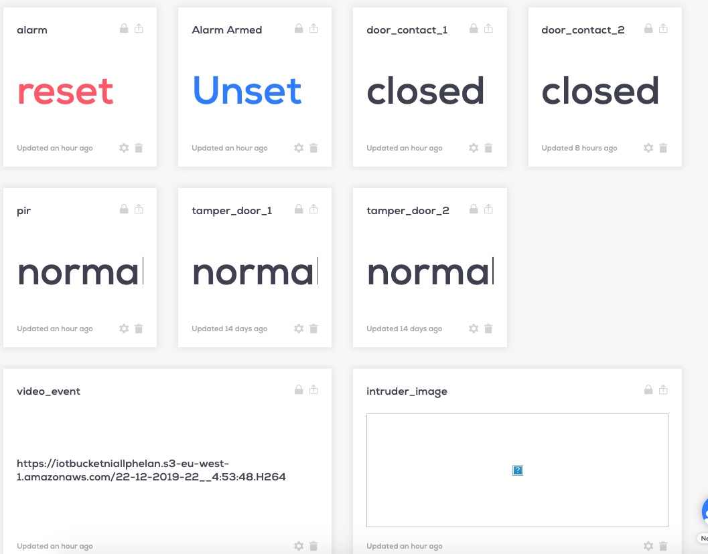
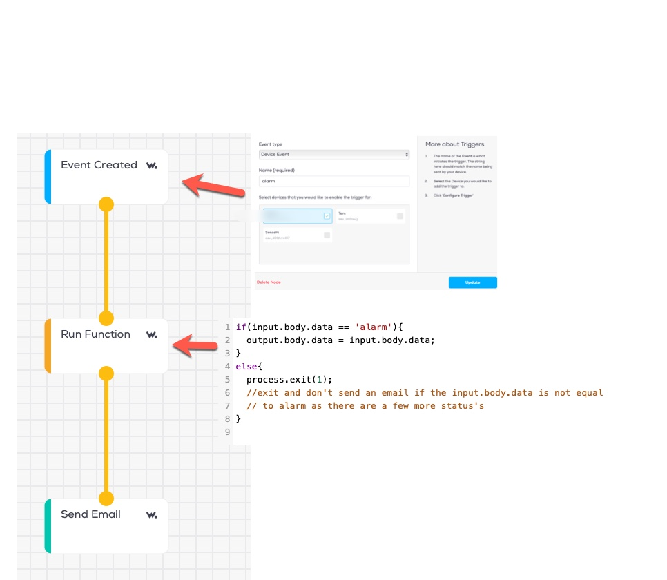
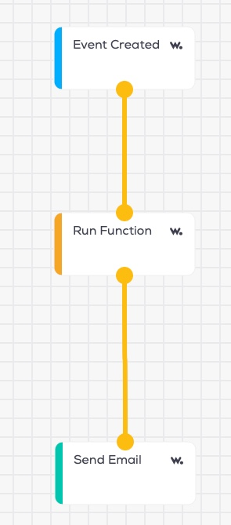
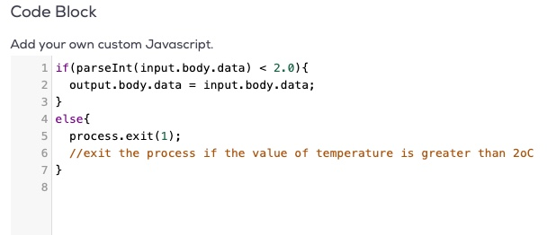

Using Wia
The setup of wia was completed in multiple steps using this easy to use IOT platform
Device Setup
The device was setup after creating an account for to connection to the raspberry pi.  For more information on setting up a device go to: Wia Add a device
Widgets
Widgets were then setup for the required fields. See a snapshot of the widgets setup for the intruder alarm giving information to the end user.  see more information on Wia Add a widget
Embedded widgets
See below some embedded
Live information
Flows
As part of my application, I used a number of flows in order to send out alerts to the end user of this application.
See more information on Wia Adding a flow- If the alarm is triggered (event) then send an email to alert the userk
- When a photo is uploaded (event) send an email with link
- When a video is uploaded (event) send an email with link
- If the temperature (event) in the shed is under 2oC, send an email to alert the user, or not
Flows - Alarm triggering an event
For this flow, the alarm status event was monitored to send an email, an important part of this was to check for the value of 'alarm' as this event has a number of different status's so for this I setup a run function as in the image below, where it would exit in the case of not equal to alarm. 
Flows - Temperature under 2oC
For this event the temperature event was monitored in order to ascertain whether it went under 2oC and alerts the user when the value is less than 2oC via email.  For the Run function the following was inserted 